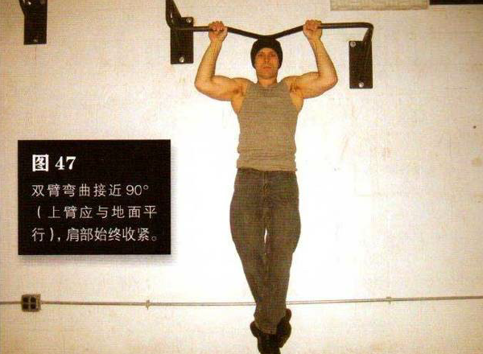
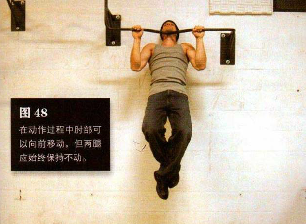

选择足够高的横杆，使得身体悬垂在上面时双脚依然离地，即便只离地一厘米也可以。向上跳起抓住横杆，采用正握姿势，两手与肩同宽或略宽，双臂弯曲接近 90°上臂应与地面平行），肩部始终收紧。膝部微屈，脚躁交叠在一起，以免双腿辅助借力。这是该动作的起始姿势
弯曲肘部，夹起肩部，平缓地拉起身体，直到下巴超过横杆。这是该动作的结束姿势。在最高处暂停一下，然后有控制地下降到起始姿势。在动作过程中肘部可以向前移动，但两腿应始终保持不动
初级标准：1 组，8 次
中级标准：2 组，各 11 次
高级标准：2 组，各 15 次